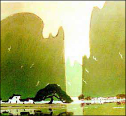
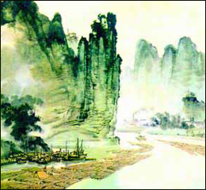
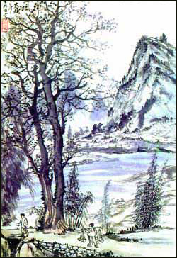
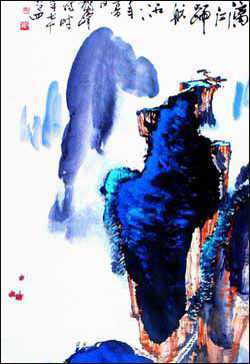
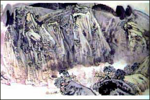
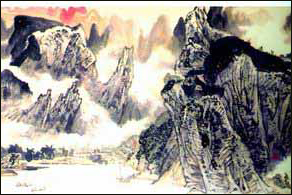

广西的美术事业发展有着悠久的历史，早在东汉时期，就出现了有名的画家；到了明清，广西的绘画艺术在全国有明显的地位，别具一格的绘画也在全国有一定的影响。到了近代，徐悲鸿等老一辈美术工作者积极创办了桂林美专、广西艺术学院，广西的美术事业得到进一步发展。涌现了以帅础坚、阳太阳、黄独峰等为代表的一批广西现代画家，他们德艺双馨、画风质朴、笔道精深，集国画精粹于一身。
“漓江画派”的提法，是20世纪60年代阳太阳等画家提出的，经过几代画家的探索和创作实践，逐渐“瓜熟蒂落”。在 2002年9月，广西美术界代表聚会南宁研讨打造“漓江画派”问题。画家们认为，“漓江画派”以闻名天下的漓江来命名，将凸显秀丽、幽静、含蓄、柔美、郁郁葱葱等审美内涵，“漓江画派”一旦形成，将作为广西美术创作思路和形象的总代称而独立于全国美术流派之林。
艺术家们挑战漓江
当今在“现代”创作意识的冲击下，拿着画板写生似乎要成为历史。然而，在90年代最后一个暮春，来自广西、浙江等地的黄格胜、姜宝林、王镛、卢禹舜、陈平、赵卫、张复兴、满维起、谢冰毅10位当代著名中青年画家，提出了重返自然“清新”一下的想法，聚集一起，开始锦绣中华万里行的举措，他们第一站就选在了人们熟得不能再熟的桂林，他们的目的很明确：“用今天的眼光和心灵去观察、去寻觅、去感悟，画出属于自己这个时代的作品。”而首选漓江更是极具挑战性的。众所周知，“桂林山水甲天下”，历代文人墨客多会于此，创作出了无数表现桂林秀美的作品，且成共识，达到了很高的艺术品位。如徐悲鸿的《漓江春雨》、李可染的《漓江图卷》，都达到了难以超越的高度，所以如何用现代人的眼光、观点和审美格调来表现自己心目中的漓江情韵，是摆在他们面前的一大课题。
现在我们还不能把这次行动做什么大的定格，但从多方位去审视是很有价值的，他们没有忘记时代的重托，他们没有让“百年漓江一幅画”的状况再延续，他们留下了我们这个时期的漓江风貌，其无愧于后世的历史价值，首先是值得肯定的。
而从作品来看，各自虽风格不同、手法各异，但其共同点写生味道极浓，为景所动，他们日乘小舟，夜宿农家。观山听泉；沐浴清风细雨，领略纯朴民风，感受改革变迁，在新认识的冲击感发下，创作出我们眼前将看到的这一大批属于他们自己的现代漓江山水作品，这里没有故作玄虚，也没有无病呻吟，这是他们脚踏实地，面对自然、面对生活所迸发出的他们理想中的漓江山水。
“漓江画派”一代宗师
谈论“漓江画派”，最绕不开的是广西艺术学院院长黄格胜。在世人皆以为非水墨难为功的漓江山水创作中，黄格胜以焦墨白描打出一片天地，格调高雅脱俗，清新亮丽。
提到黄格胜，就想到了他的《漓江百里图》。作者把漓江百里的美景及迷人的形态情调贯通于长卷，统一布局，分段表现；既能独立成幅，又贯通全卷：“漓 江烟雨，渔家灯火，千峰碧透，浮山倒影”，在200米的长卷中，表现得美不胜收。用笔雄劲潇洒，讲究清新与朦胧相配，达到“能卧游，可展赏”的艺术效果。
“我的一切艺术几乎都与漓江有关。”黄格胜声称。在我国绘画史上，尚无一位绘画大师以漓江为主要创作题材，几乎是一片空白。源自对漓江历史的认识，黄格胜下定了致力于漓江艺术创作的决心。他说：“我几十次下漓江写生作画，深感漓江是最难画的，如果画得小里小气，就缺乏震撼力。”
“漓江画派”作品
